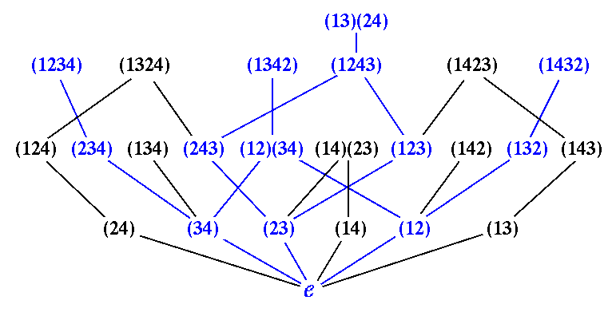

| Symmetric group | S_4 | S_5 | S_6 | S_7 | S_8 |
|---|---|---|---|---|---|
| # Coeffs | 208 | 3600 | 81669 | 2285414 | 79860923 |
| # distinct coeffs | 5 | 12 | 62 | 332 | 3267 |
The first row records the total number of constants
cwu,v(\lambda,k)
which may be non-zero.
That is, those triples u, w, and
\lambda where u<k w are comparable in
the k-Bruhat order on Sn, and
\lambda is a partition of l(w)-l(u),
with at most k parts.
In the paper: Schubert polynomials,
the Bruhat order and the geometry of Schubert varieties,
we prove many identities among these constants, which show how to compute
all of the constants from a
relative few, the number of which are recorded in the
the second row.
This table is Table 1 in that paper.
To generate this table, we first obtained the following data, for each n, k, and r. These data are tabulated in the text files indicated. Here n indexes a symmetric group Sn, k ranges from 1 to n-1, it is the index of the k-Bruhat order, <k, and r is a rank.
Representatives of these equivalence classes (for n at most 8) are listed in the file zeta-orbits.list. There, they are listed by n and k, and the cycles are written. This list was computed using the MAPLE script, zeta-orbits.maple. However, this script will output extra permutations, as it does not properly screen for irreducibility.
Using the identities we discovered, we can deterine the `new' coefficients for each n. By new, we mean those for which we do not have an identity linking them to a coefficient from Sn-1. We do this by taking the componentwise product of the first and third tables Thus the second row is obtained by adding the entry for Sn-1 to this number of `new' coefficients. For S6, S7, and S8, these calculations are done using the MAPLE scripts, S6-coeffs.maple, S7-coeffs.maple , and S8-coeffs.maple. For S4 and S5, we did this by hand.
It is clear that the first row is correct.
For the second, we showed in "Schubert polynomials..." show that the coefficient cwu,v(\lambda,k) depends only upon \lambda and \zeta:=wu-1 when u <k w, thus we define c\zeta\lambda to be cwu,v(\lambda,k). We showed this constant depends upon \zeta up to a linear relabeling of the entries in a cycle, thus we may assume that \zeta has full support in Sn, for otherwise we can compute c\zeta\lambda in a smaller symmetric group or flag manifold. This constant also only depends upon \zeta up to conjugation by the longest element of Sn, and more mysteriously, only up to conjugation by the cycle (1,2,...,n), which we call `cyclic shift'. Since the constant c\zeta\lambda equals the constant c\eta\mu, where \eta is the inverse of \zeta, and \mu the transpose of \lambda, we further restrict ourselves. Lastly, c\zeta\lambda will vanish if \lambda has more parts than there are numbers a with \zeta(a)>a.
Thus we only need tabulate the equivalence classes of permutations \zeta which have full support, and with equivalence generated by cyclic shift, conjugation by longest element, and inverse. There is one further reduction possible: We have a notion of reducible permutations \zeta=\eta\cdot\xi. For these, c\zeta\lambda may be calculated from c\eta\mu and c\xi\nu.
It should be clear that the second row is correct.
While not needed to compute Table 1, we have also looked at the rank
distribution of this new partial order in small symmetric groups.
The results of this are tabulated in
neworder.ranks,
which tabulates the rank statistics of elements in the Grassmann-Bruhat order
on Sn, for
The Grassmann-Bruhat for S4:

Last modified: 26 August 1998